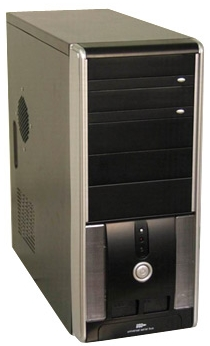
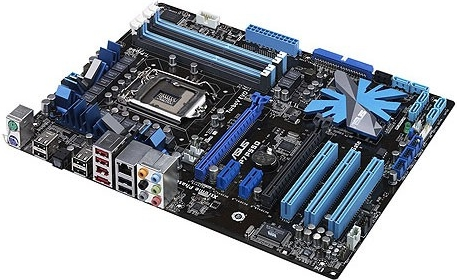
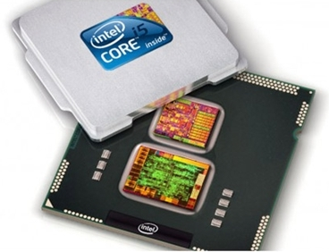
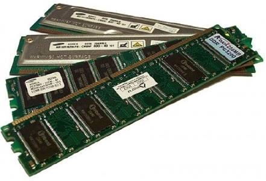
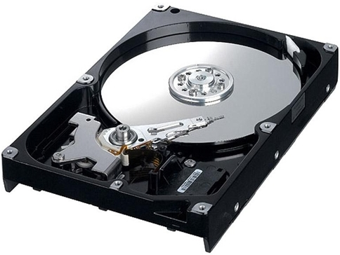
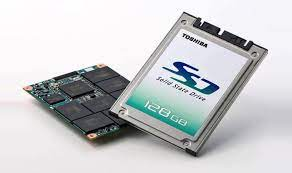
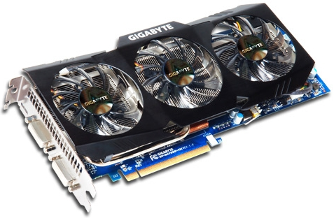
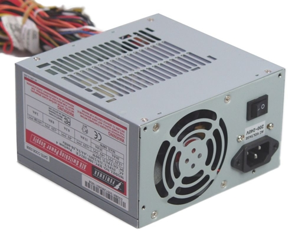

Корпус
Корпус являє собою «ящик» для розміщення материнської плати, жорсткого диску, приводів і т. д.
Материнська плата
Материнська плата представляє собою спеціальну багатошарову плату, на яку встановлюються різні компоненти. Саме материнська плата об’єднує і координує роботу таких комплектуючих як процесор, оперативна пам’ять, плати розширення і всілякі накопичувачі.
Процесор
Процесор є мозком комп’ютера. Це пристрій обробляє програмний код і визначає основні функції комп’ютера з обробки інформації.
Оперативна пам'ять
Оперативна пам’ять — це планка на материнській платі, призначена для тимчасового зберігання даних і команд, необхідних процесору для виконання операцій.
Жорсткий диск
Усі файли, які ми розміщуємо на комп’ютері, всі програми, музика і фільми зберігаються на жорсткому диску комп’ютера. Також його називають вінчестером. Дані записуються на спеціальні пластини, покриті шаром феромагнітного матеріалу.
Жорсткі диски бувать двох видів:
HDD, SSD.
HDD
HDD диск або вінчестер. Це класичний жорсткий диск, який включає в себе кілька намагнічених «млинців», а також спеціальну головку. Вона знаходиться в мікрометрах від млинців і потрібна для того, щоб зчитувати інформацію безпосередньо з їх поверхні. Роботу HDD диска можна порівняти з програванням мелодії з вінілової платівки.
SSD
SSD накопичувач являє собою твердотільний пристрій, в якому відсутні рухомі частини та деталі. Це набір мікросхем, які розміщені на одній платі. По суті, вони працюють за принципом USB-флешки.
Відеокарта
Відеокарта — це пристрій, що перетворить зображення, що перебуває в пам’яті комп’ютера, у відеосигнал для монітора
Блок живлення
Блок живлення призначений для постачання комп’ютера електричною енергією. Блок живлення перетворює напругу до необхідних значень, стабілізує і захищає від перешкод вихідного напруги.